Nous revoici au Brésil ! Rentrés par Iguaçu, nous sommes ici pour participer au travail de conservation et d'étude du milieu naturel du Rio Parana de l'Institut Chico Mendez de Conservation de la Biodiversité ICMBio, l'organisme fédéral de protection de la nature.
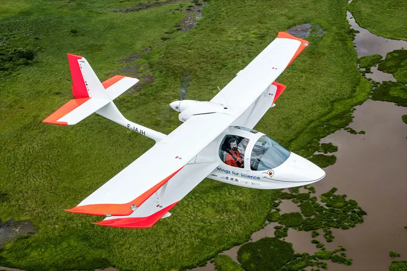
La mission ? Erick Xavier, directeur régional de l'entité, nous a chargé de photographier les différents types de milieux naturels survolés le long du fleuve dans le cadre d'une étude d'écologie du paysage, repérer plusieurs types d'arbres (notamment des buritis) et des nids de harpies, et enfin collecter de l'eau douce dans un lac inaccessible nommé le "lagoa azul". La zone qui nous sert de base est si isolée que le jeune Gabriel, le seul capable d'apprivoiser les tatous suffisamment pour les nourrir, effectue chaque jour 8 heures de transport pour aller à l'école.
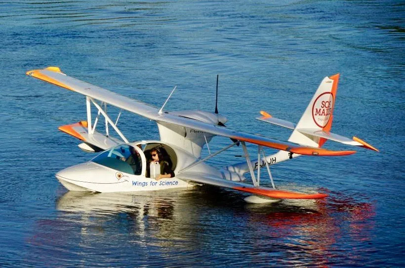
Pour réaliser nos différentes missions, nous nous sommes arrêtés le long du fleuve dans plusieurs antennes des instituts scientifiques et des groupes de conservation, où nous avons été très bien accueillis par les habitants et avons même découvert pleins d'animaux sympas (notamment le "lobo guara" dont le nom ressemble au loup garou) lors des balades en forêt.
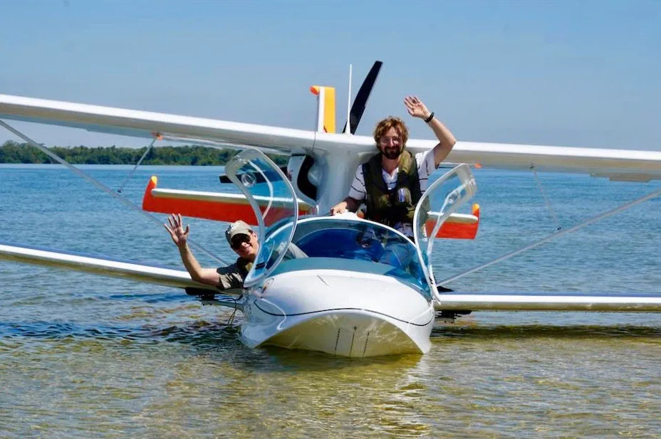
Première mission : le lagoa azul
Première mission : le tout premier prélèvement d'eau dans ce lagon bleu, inaccessible autrement car entouré de marais.
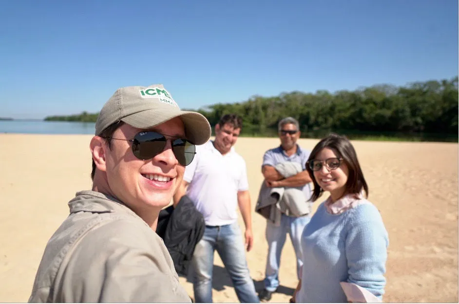
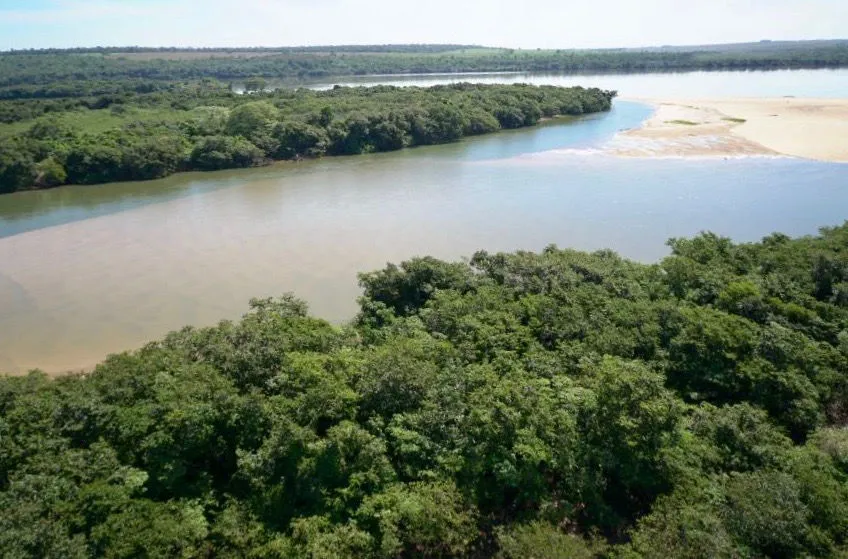
Missions aériennes
Mission suivante : les recherches aériennes. Dernière mission : les photographies générales et plus hautes des abords du fleuve, afin d'observer comment les différents habitats naturels s'ajustent les uns avec les autres.
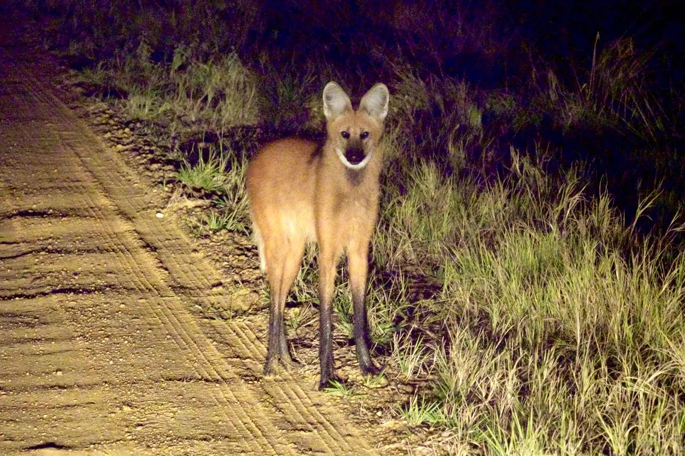
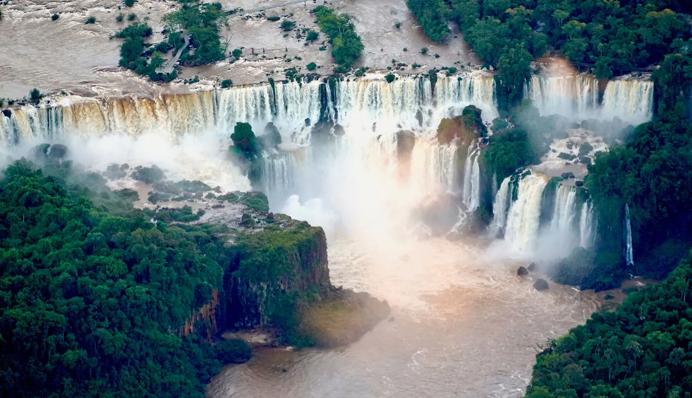
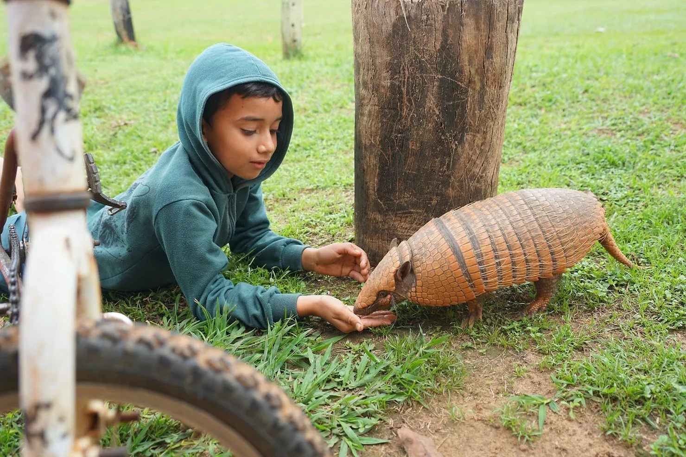
Reportages TV
Et avec même la TV Globo qui est venue nous suivre sur une journée, vous avez même droit à deux reportages en portugais diffusés sur la chaîne nationale.
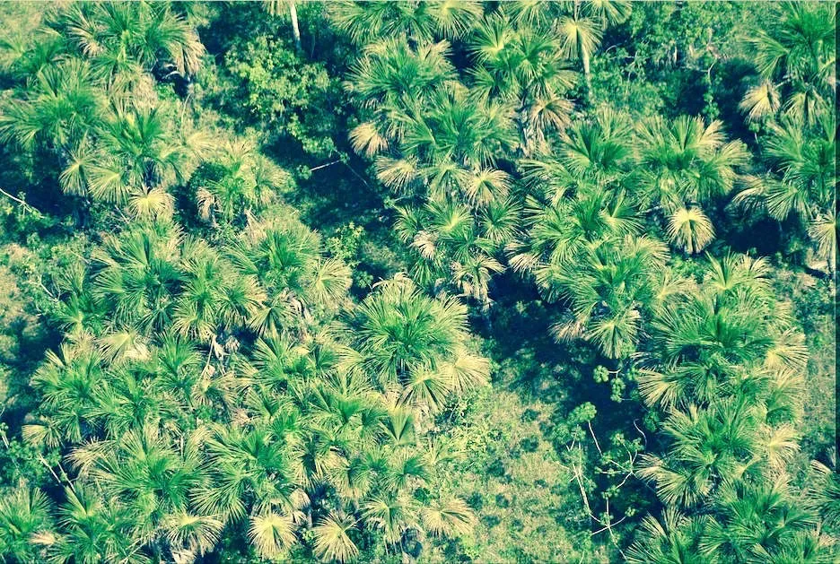
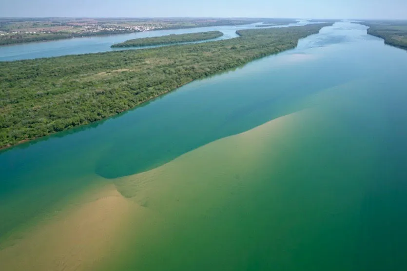
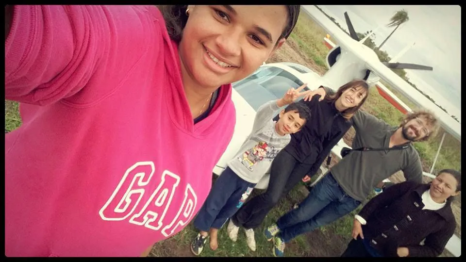
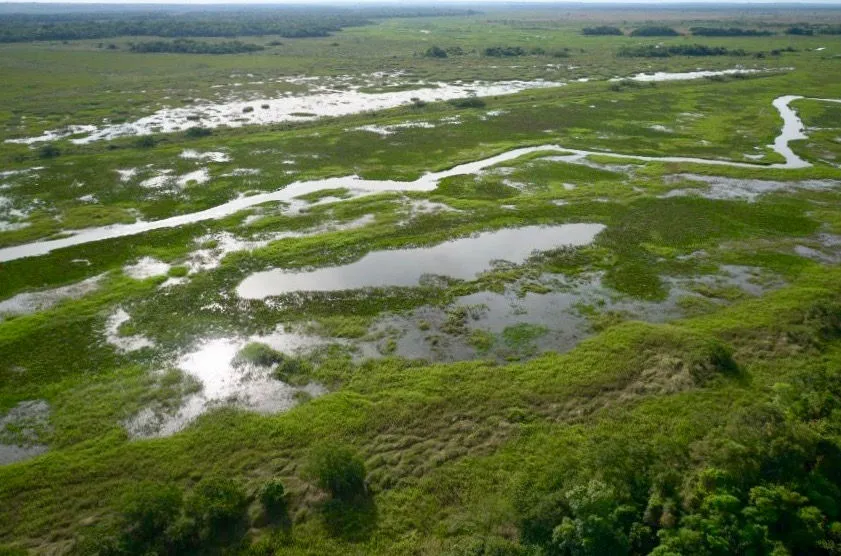
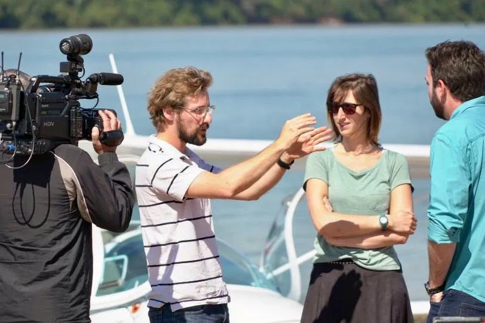
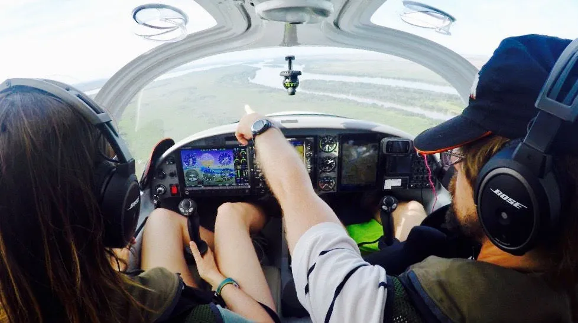